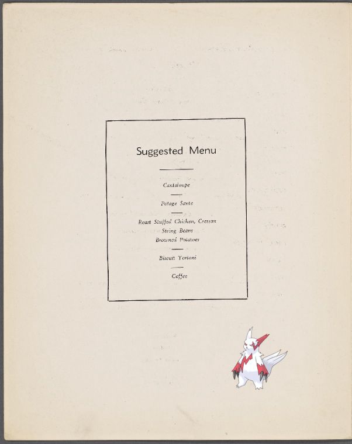
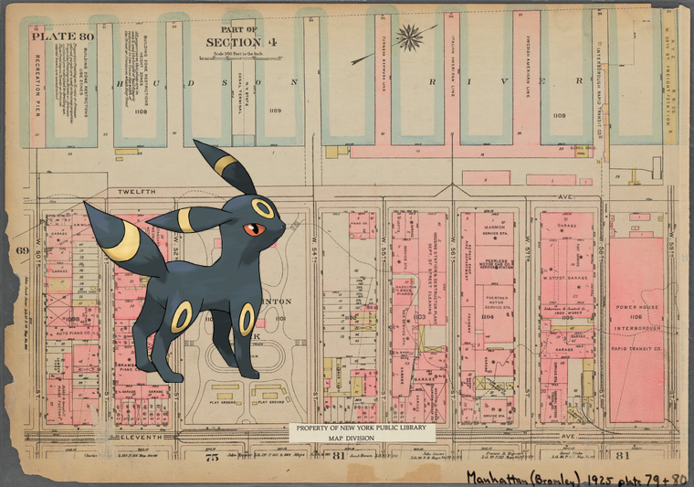
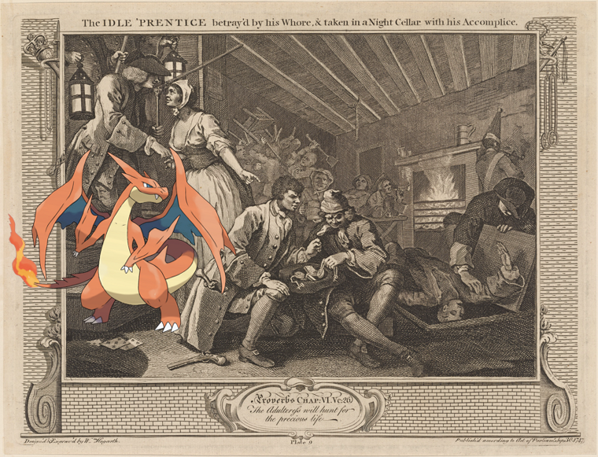

Pokémon in the NYPL archives
2018-4-3 22:10:08

Zangoose –
R.M.S. "Queen Elizabeth"
!
2018-4-3 20:10:08

Umbreon on
Plate 80, Part of Section 4: [Bounded by (Hudson River Piers) Twelfth Avenue, W. 59th Street, Eleventh Avenue and W. 50th Street]
.
2018-4-3 18:10:05

;
The Idle 'Prentice betray'd by his Whore, and taken in a Night Cellar with this Accomplice [plate 9]
!
16
|
15
|
14
|
13
|
12
|
11
|
10
|
9
|
8
|
7
|
6
|
5
|
4
|
3
|
2
|
1
|
0